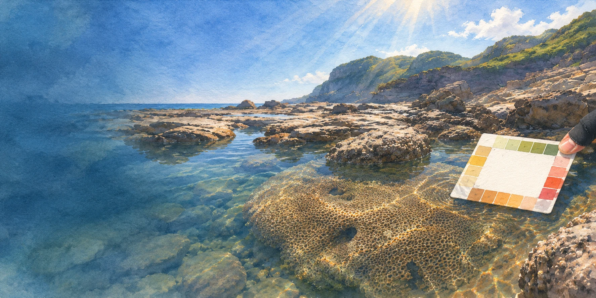
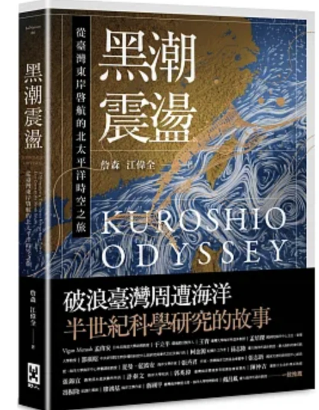

臺大青年海洋永續座談｜活動回顧NTU Youth Ocean Sustainability Forum · Event recap
從一隻珊瑚蟲One tiny coral polyp
開始看海A new way to see the ocean
跟著一隻小小的珊瑚蟲，讀懂一股洋流、一段海岸，Follow one tiny coral polyp as you explore an ocean current, a stretch of coast,
以及一群人如何為海底多做一點事。 and see what people are doing to care for life beneath the waves.
座談精華片段將陸續補上。Highlights from the forum will be added here.
選一隻珊瑚蟲Choose a coral polyp 探索議題Explore the topics 翻開我的手記Open my notebook
選一隻珊瑚蟲 Choose a coral polyp
從礁石上的一隻珊瑚蟲開始，看牠如何和新長出的珊瑚蟲一起形成群體。Start with one polyp on the reef and watch it form a colony as new polyps bud.
這裡用顏色區分插圖。實地辨認時，請看珊瑚群體的外形。Colors distinguish the illustrations. In the field, look at the shape of the whole colony.
看實景照片與分類說明 Field photos and coral types
團塊狀、枝狀與片狀描述硬珊瑚群體的外形。軟珊瑚是另一類珊瑚，也有多種外形。實際生長速度因種類與環境而異。Massive, branching, and plate describe hard-coral colony shapes. Soft corals are a separate group with many forms. Growth rates vary by species and environment.
CoralWatch｜看四種珊瑚的實景照片（PDF） Compare photos of the four coral types (PDF)
聽講時，留一點空白給自己Take a moment to reflect
每章聽完分享後，停一下，讀讀珊瑚蟲想問你的話。寫下的句子會留在手記裡，也能和你選的珊瑚一起下載成小卡。After each talk, pause and read the polyp’s question. What you write stays in your notebook, and you can download it on a card with your chosen coral.
珊瑚蟲 · 共生Coral polyps · Symbiosis
我的顏色，My colours come
也來自我的夥伴from my partners, too
–
曾于恒教授（臺大海洋中心主任）致詞Opening remarks by Prof. Yu-Heng Tseng, Director of the NTU Ocean Center
從開場帶走一個你想繼續追問的問題，跟著珊瑚蟲看看，牠的顏色如何來自和夥伴一起生活。Take one question from the opening into this chapter and see how a polyp’s colour comes from living with its partners.
延伸閱讀與講座｜聖嬰預報、海氣耦合模式Further reading and talk · ENSO forecasts and coupled ocean–atmosphere models
- 哥倫比亞大學 IRI｜聖嬰與南方振盪（ENSO）預報Columbia University IRI · El Niño–Southern Oscillation (ENSO) forecast
以 2021 年 4 月的歷史預報為例，從海表溫度表認識聖嬰、反聖嬰與中性狀態的預報。Use this April 2021 forecast as a historical example of how sea-surface temperature forecasts help distinguish El Niño, La Niña, and neutral conditions.
- YouTube｜曾于恒：多尺度海洋與大氣耦合模式的挑戰YouTube · Yu-Heng Tseng — Challenge of multi-scale Ocean-Atmosphere Coupled Modeling System
從講座認識，為何同時模擬海洋與大氣時，需要考量不同的時間與空間尺度。Explore why modelling the ocean and atmosphere together calls for attention to different scales in time and space.
「我是珊瑚蟲。住在我體內的微小共生藻能利用陽光製造養分。海水長時間過熱時，我可能失去這些夥伴，顏色也會變淺。」“I’m a coral polyp. Tiny algae live inside me and use sunlight to make food. If the water stays too warm for too long, I can lose those partners and start to pale.”
看見顏色的變化See the colour change
共生藻為許多造礁珊瑚提供養分，也影響牠們的顏色。Symbiotic algae nourish many reef-building corals and help give them their colours.
顏色變化示意Illustration of colour change黑潮 · 流動The Kuroshio · Ocean currents
沿著臺灣東岸，Along Taiwan’s east coast,
向北的暖流a warm current flows north
《黑潮震盪》作者講座｜詹森教授Kuroshio Odyssey author talk · Prof. Sen Jan
主講「理性，是我們理解藍色脈動最浪漫的方式」。從海上觀測與科普閱讀出發，練習用證據理解黑潮。“Reason is our most romantic way of understanding the ocean’s blue pulse.” Explore how observations and science writing help us understand the Kuroshio through evidence.
認識詹森與《黑潮震盪》Meet Sen Jan and explore Kuroshio Odyssey
詹森與江偉全從臺灣東岸出發，把研究船與水下滑翔機的觀測、旗魚和鬼頭刀的洄游，以及漁民的經驗放在同一本書裡。跟著他們看黑潮如何變動，也看看科學家用哪些線索讀出海面下的變化。Starting off Taiwan’s east coast, Sen Jan and Wei-Chuan Chiang bring together observations from research vessels and underwater gliders, the migrations of billfish and mahi-mahi, and the experience of local fishers. Follow the changing Kuroshio and see how scientists piece together evidence from below the surface.
- 國科會｜詹森教授傑出研究獎專頁NSTC · Prof. Sen Jan’s Outstanding Research Award profile
認識詹森如何結合海上觀測與數值模式，研究黑潮、內波和渦旋。See how Jan uses field observations and numerical models to study the Kuroshio, internal waves, and eddies.
- 三民書局｜《黑潮震盪》書介與書摘San Min Bookstore · Book overview and excerpts
查閱書介、作者介紹與目次，或選擇「書摘／試閱」。Read the description, author bios, and contents, or select the excerpts tab.
- 美國 NOAA｜黑潮延伸區海洋觀測NOAA · Kuroshio Extension Observatory
看看日本以東的繫留浮標如何長期觀測海洋與大氣間的交換。See how a moored buoy east of Japan tracks exchanges between the ocean and atmosphere.
- 日本 JAMSTEC｜互動洋流地圖JAMSTEC · Interactive ocean-current maps
選擇 JCOPE，再開啟 Current，探索日本周邊的洋流與黑潮路徑。Select JCOPE and turn on Current to explore currents and the Kuroshio path around Japan.
- 藝起看海｜冬季浪大，為什麼還要出海做研究？Ocean Science Screening Room · Why go to sea for research in rough winter conditions?
- Earth Seminar｜詹森教授：臺灣的潮流（第 2 段）Earth Seminar · Prof. Sen Jan on Taiwan’s tidal currents (Part 2)
- 海洋之窗｜詹森老師的海洋旅行（上）Window on the Ocean · Sen Jan’s Ocean Journey (Part 1)
跟著《黑潮震盪》，從臺灣東岸讀這股洋流，看看它如何牽動魚群、漁民的生活與海洋研究。Follow the current from Taiwan’s east coast with Kuroshio Odyssey and discover how it shapes where fish gather, how fishers make a living, and how scientists study the ocean.

暗黑主宰者The ruler of the deep
北赤道洋流在菲律賓附近分流，其中向北的一支形成黑潮。這股暖流沿臺灣東側流向琉球與日本南部，將低緯度海域的熱量帶向北方。The North Equatorial Current splits near the Philippines. Its northward branch becomes the Kuroshio. The warm current follows Taiwan’s east coast towards the Ryukyu Islands and southern Japan, carrying heat north from lower latitudes.
中央氣象署｜黑潮Taiwan Central Weather Administration · The Kuroshio
海岸 · 觀察The coast · Observation
站在岸上，On the shore,
看見陸地與海相接where land meets sea
用草根精神，投入海洋保育實踐｜賴以平Grassroots ocean conservation in practice · Yi-Ping Lai
從鱟保育與 CoralWatch 出發，看看在地觀察如何成為大家都能參與、也能持續接力的紀錄。Through horseshoe crab conservation and CoralWatch, see how local observations become records that anyone can contribute to and build on.
2025 第五屆未來教育臺灣1002025 Future Education Taiwan 100 · Fifth edition
賴以平以「AI共學 X 守護行動：從城市螢火蟲到海洋保育及防災的永續教育實踐」入選，將在地生態觀察、海洋保育與防災帶進教學。Yi-Ping Lai was recognised for an AI-supported learning project that brings local ecological observation, marine conservation, and disaster preparedness into the classroom.
- YouTube｜第五屆贈獎典禮會後精華YouTube · Fifth award ceremony highlights
回看本屆贈獎典禮，認識來自各地的教育行動。Revisit the ceremony and discover education initiatives from across Taiwan.
- 臺北酷課雲｜113 年學測重點複習直播（地球科學）Taipei CooC Cloud · 2024 General Scholastic Ability Test review livestream (Earth Science)
- 臺北酷課雲｜112 年國中會考重點複習直播（地球科學）Taipei CooC Cloud · 2023 Junior High School Comprehensive Assessment review livestream (Earth Science)
- CoralWatch｜珊瑚健康色卡使用方式CoralWatch · Using the Coral Health Chart
看看公民科學的珊瑚顏色紀錄是怎麼開始的。See how citizen scientists start recording coral colour.
雨水徑流可能把泥沙或污染物帶進近岸水域。先想起一段你走過的海岸，再選一個你想留意的線索。Rainwater runoff can carry sediment or pollutants into coastal waters. Picture a stretch of shore you’ve walked along, then choose a clue to look for.
NOAA Fisheries｜陸源污染與珊瑚礁NOAA Fisheries · Land-based pollution and coral reefs
我想先觀察……What would I look for first?
選一個線索，試著把印象變成可以記錄的觀察。Choose a clue and turn your first impression into an observation you can record.
澎湖復育現場 · 長期照顧Restoration in Penghu · Long-term care
一塊復育磚，What happens after
放進海裡之後a restoration block goes into the sea?
–
新光人壽慈善基金會唐志豪執行長講座Talk by Chih-Hao Tang, Executive Director of the Shin Kong Life Charity Foundation
分享澎湖淨海、公民科學和生物炭珊瑚復育磚，並思考布放復育磚之後，還需要哪些照顧與監測。Explore marine debris removal, citizen science, and biochar coral restoration blocks in Penghu, then consider what care and monitoring are needed after deployment.
以澎湖杭灣為例，布放復育磚只是起點。團隊還會回到樣區，測量珊瑚的生長與形態、記錄周邊魚類，累積可以比較的觀察。跟著現場紀錄看，潛水員又能怎麼在導潛帶領下參與觀察？At Hang Bay in Penghu, putting the blocks in place is only the beginning. The team returns to measure coral growth, document colony shapes and record fish, building a record they can compare over time. The field report also shows how divers can contribute observations with guidance from a dive leader.
澎湖生物炭復育磚與 Team OceanPenghu biochar restoration blocks and Team Ocean
新光人壽慈善基金會、新光保全與合作團隊把稻殼等農業剩餘資材轉為生物炭，用於澎湖的珊瑚復育基座。依企業公告，專案布放了 100 塊復育磚、種植 552 株珊瑚，並透過水下監測和公民科學培訓持續瞭解珊瑚及周邊生態的變化。The Shin Kong Life Charity Foundation, Shin Kong Security, and their partners use biochar made from agricultural residues such as rice husks in coral restoration blocks in Penghu. According to the company’s announcement, the project deployed 100 blocks and planted 552 corals. Underwater monitoring and citizen science training help track changes in the corals and the surrounding ecosystem.
- 新光保全 ESG｜2026 Team Ocean 獲獎公告Shin Kong Security ESG · 2026 Team Ocean award announcement
了解跨域合作如何將農業剩餘資材再利用、珊瑚復育與公民參與串在一起。See how the partners connect reuse of agricultural residues, coral restoration, and public participation.
- 新光保全｜澎湖復育計畫與後續監測Shin Kong Security · Penghu restoration project and monitoring
閱讀復育磚布放、水下監測與生物多樣性調查的專案介紹。Read about the deployment of the blocks, underwater monitoring, and biodiversity surveys.
- 美國 NOAA Fisheries｜珊瑚礁復育方法NOAA Fisheries · Restoring coral reefs
比較不同地區如何選擇復育方法，以及怎麼觀察珊瑚能否存活。Compare approaches to reef restoration and see how coral survival is tracked.
- 健康醫療網｜新光人壽慈善基金會與夥伴的海洋自然碳匯實踐Health News · The Shin Kong Life Charity Foundation and partners explore marine carbon sinks
從基金會與跨領域夥伴的合作，理解公私協力如何支持海洋保育。Read how the foundation and partners from different fields work together to support marine conservation.
- BlueTrend 藍色脈動｜澎湖生物炭珊瑚復育磚實錄BlueTrend · Penghu’s biochar coral restoration bricks and sustainable diving
看看杭灣團隊如何測量珊瑚、調查魚類，也了解潛水旅客如何在引導下參與公民科學觀察。See how the Hang Bay team measures corals and surveys fish, and how visitors can take part in guided citizen science dives.
- 工商時報｜農業部見證 新光保全與新光人壽慈善基金會接力守護土地與海洋Commercial Times · Ministry of Agriculture witnesses Shin Kong Security and the Shin Kong Life Charity Foundation join forces to protect land and sea
從有機稻米種植與捐贈，到將收成後的稻殼製成生物炭，看看這項合作如何從農田延伸到珊瑚復育。Follow the partnership from growing and donating organic rice to turning leftover rice husks into biochar for coral restoration.
- 新光人壽慈善基金會官網｜海洋保育Shin Kong Life Charity Foundation · Marine conservation
認識基金會的「守護珊瑚，永續海洋」方案，包括珊瑚礁體檢（Reef Check）、CoralWatch 珊瑚觀測教育與水下海廢清除。Explore the foundation’s marine conservation program, which includes Reef Check surveys, CoralWatch education, and underwater debris removal.
故事從東岸轉到臺灣海峽的澎湖。新光人壽慈善基金會與新光保全及專業團隊合作，將稻殼等農業剩餘資材的生物炭應用於復育基座，並在澎湖海域進行珊瑚移植與後續監測。The story moves from Taiwan’s east coast to Penghu in the Taiwan Strait. The Shin Kong Life Charity Foundation, Shin Kong Security, and project partners use biochar made from agricultural residues such as rice husks in restoration blocks. They transplant corals in Penghu’s waters and monitor them over time.
新光保全｜澎湖珊瑚保育計畫Shin Kong Security · Penghu coral conservation project
打開一塊磚的旅程Follow a restoration block’s journey
從田裡來Starting in the fields
收成後的農業剩餘資材可被轉製為生物炭，納入復育磚材料。Agricultural residues left after harvest can be made into biochar and used in restoration blocks.
成為海底基座Becoming a base on the seabed
復育磚在計畫中作為珊瑚附著與生長的基座。The blocks give corals a surface to attach to and grow on.
回到現場，看它長得如何Returning to see how the corals grow
布放後，團隊進行水下監測與生物多樣性調查，持續觀察珊瑚生長和周遭生態變化。After placing the blocks, the team monitors them underwater and surveys biodiversity to track coral growth and changes in the surrounding ecosystem.
青年接力 · 傳承Youth action · Passing it on
下一位看海的人，What will we pass on
會接到什麼？to the next person who looks to the sea?
臺帛青年永續座談Taiwan–Palau Youth Sustainability Panel
帛琉青年代表 Kenley Kenneth（盧恩立）分享島國與氣候談判的視角。臺灣青年代表許雅禎（臺大海洋所系學會）從海洋科學的研究與學習歷程出發，賴以平分享從在地保育走向青年參與的經驗。Palau youth representative Kenley Kenneth brings an island perspective and experience in climate negotiations. Taiwan youth representative Ya-Chen Hsu of the NTU Institute of Oceanography Student Association reflects on studying and researching ocean science. Yi-Ping Lai shares how local conservation can lead to youth participation.
延伸影片｜帛琉與 COP31 海洋氣候談判Related video · Palau and the COP31 ocean–climate negotiations
- Pasifika TV｜COP31：帛琉在高層海洋氣候談判中扮演關鍵角色Pasifika TV · COP31 | Palau Takes Key Role in High-Level Ocean Climate Negotiations
從帛琉的例子，看看太平洋島國如何將海洋議題帶進國際氣候談判。See how Palau brings an island perspective on ocean issues to international climate negotiations.
把今天得到的一個問題，交給下一位願意觀察的人。你可以和他約定一起回到同一個地方，讓下一次的記錄接得上這一次。Share a question you took from today with someone who’s curious. Plan to return to the same spot together, so the next record can build on this one.
從今天帶走一種顏色Take a colour with you
哪個顏色最接近此刻的你？Which colour best matches how you feel right now?
給下次回來的你For your next visit
我的海洋手記My Ocean Notebook
把陪你看海的珊瑚和想留下的文字，收進一張水彩小卡。Keep your coral and the words you want to remember together on a watercolour card.
手記和長成的珊瑚留在目前的瀏覽器。Your notes and coral colony are saved in this browser.
CORALWATCH
潮汐備忘錄Tide Notebook
我的海洋手記My Ocean Notebook
臺大青年海洋永續座談NTU Youth Ocean Sustainability Forum
主辦｜國立臺灣大學研究生協會Organized by NTU Graduate Student Association
珊瑚蟲長成群體後，牠的水彩插畫會出現在這裡。Once your coral polyp grows into a colony, its watercolour illustration will appear here.
去選珊瑚蟲Choose a coral polyp我留下的文字My reflections
寫下想留下的句子，就能把它帶進這張小卡。Write a line you want to remember, and it will appear on your card. 去寫一句話Write a note